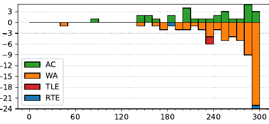

47th ICPC World Finals
Problem authors: Derek Kisman and Walter Guttmann
Solved by 30 teams.
First solved after 82 minutes.
Shortest team solution: 1303 bytes.
Shortest judge solution: 871 bytes.

Consider a face of die D3, with value v. Let Si(v), for i ∈ {1, 2}, be the expected value of points die Di gets if D3 lands on this face. The expected value die D1 gets overall is the average of S1(v) over all faces of D3.
S1(v) is simply the number of faces of D1 larger than v, plus half the number of faces equal to v. The same goes for S2(v). This means that there are O(n) possible values for the pair (S1(v), S2(v)), and we can easily calculate all of them in O(n log n). We are now looking to assign weights to those points so that the weighted average of S1(v) is ≤ 0.5, and the weighted average of S2(v) is as high as possible (and vice versa).
This is a geometry problem. Note that all the points we can obtain by weighted averages of a set of points is exactly their convex hull; so we're looking for the highest y-variable value in the convex hull intersected with x ≤ 0.5, which can be determined in O(n) in a number of ways.